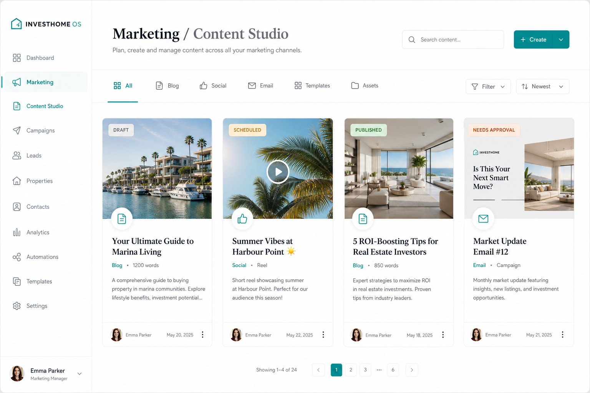

Published cards + assets tab — not a separate CMS scavenger hunt.
Marketer
Finish draft → submit / schedule / publish today
Status cards + editor meta rail; SEO/UTM behind Details ▸.
Investor manager
Approve investor-facing copy when in the loop
Needs approve status makes the queue visible without workflow config.
Executive
Confirm content is shipping on schedule
Scheduled / published cards answer production — not channel dashboards.
One studio to ship. Landing builders, Design Studio furniture, and AI prompt settings stay out of the default path; backends remain.
Low-fidelity wireframe
Structured layout · boxes only
Channel tabs and status cards default. Create ▾ maps blog, social, email, from template. Landing pages/forms stay Advanced under Marketing; Design Studio furniture stays out.
Title + body/blocks | Status · Channel · Campaign · Schedule · Approvals · SEO/UTM (Details ▸) · Save / Submit / Publish
High-fidelity mockup
Premium light SaaS · sales/marketing friendly
Editorial card grid with clear status — create and approve without a second marketing OS.
Desktop frame · Content StudioMockup

High-fidelity desktop · Content Studio cards across draft/scheduled/published/approval.
Desktop layout
Primary working surface
Composition
Channel tabs + search + status filter + Create ▾
Cards default; list/table for bulk
Editor: canvas left, meta rail right with Details ▸ for SEO/UTM
Actions: Save, Submit, Publish
Density & hierarchy
Landing pages/forms not default studio clutter
Design Studio (furniture product) explicitly excluded
Disconnected channel → honest banner, no fake metrics
Mobile behavior & preview
Phone-first adaptations · operational queue first
Content Studio
Channel chips
All Blog Social Email
Draft · Marina guide
Scheduled · Summer reel
Library
Create
More
Primary mobile job: finish today’s queue — not recreate the desktop dashboard.
Behavior rules
Cards single column; editor full-screen
Meta rail becomes bottom sheet
Approvals as banner on card
User journey
Filter channel→Create or open draft→Edit→Submit / Schedule / Publish
Empty: “Create your first piece — blog, social, or email.”
Primary actions
Action
Where
Outcome
Create ▾
Header
Blog / Social / Email / From template
Submit for approval
Editor
Needs approve status
Schedule / Publish
Editor
Channel publish path
Open Assets
Tab
Media library
Visible & hidden fields
Progressive disclosure · docs 12–13
Visible (daily)
Title · channel type · status
Owner · updated / schedule time
Linked campaign (optional)
Hidden (Details / Advanced)
SEO / UTM (Details drawer)
Approval workflow configuration
Vendor/budget/attribution (Marketing Advanced)
AI prompt settings (AI restricted)
Design rationale
Why better than current
Ship content from one place
Blog, social, and email lived in separate rails and workspaces. Content Studio consolidates creation while leaving product Design Studio and landing-page builders out of the way.
Matches GROW nav item under Marketing
Progressive disclosure keeps editor calm
Honest empties and channel banners build trust
Approval gate
Section 11 ready for review
Visual package only. No routes, components, or APIs changed. Approve or request changes before any implementation.